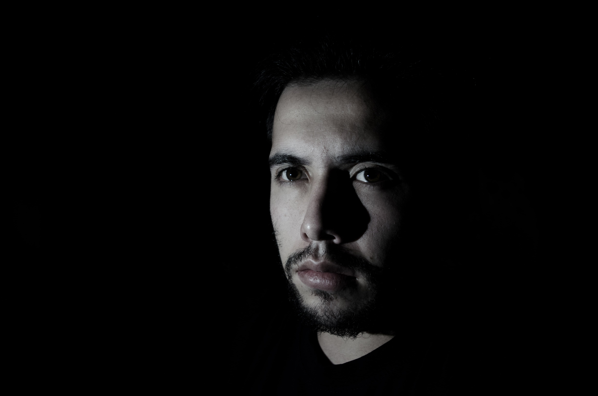

My name is Marko Stefanovic and I am a logo designer working in Nis, Serbia. I specialize in illustration, photography and processing images. I'm inspired by the love I have for my home city. I have also photographed many different subjects, animals, scenes, and moments all over the world. There's a picture around every corner.
I'm inspired by the love I have for my home city. I have also photographed many different subjects, scenes, and moments all over the world. There's a picture around every corner.
I am surrounded both by natural beauty and interesting people. I use my camera to document the world and then print images with a focus on the magic I find in daily life. My pictures tell my stories.
